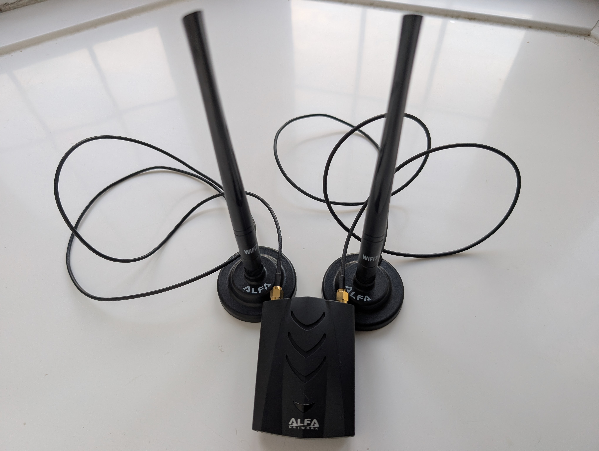

WardrivingMy wardriving setup and discovered networksI have discovered this many new networks on WiGLE:
I started wardriving on February 7th, 2026 and these are what I have found every month (if I remember to update it):
 I used to use kismet with external antennas but it is annoying to set up so i dont do it often anymore i just use a Galaxy A14 phone I will update this page with all my new discoveries every month if i remember to hopefullyTotals: |

Visitor Count: -7 :(
This page is best viewed with